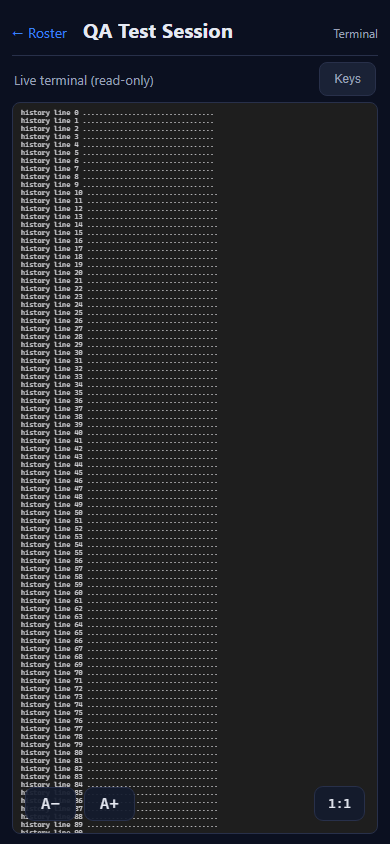
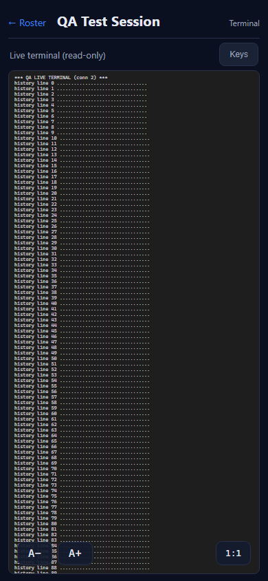
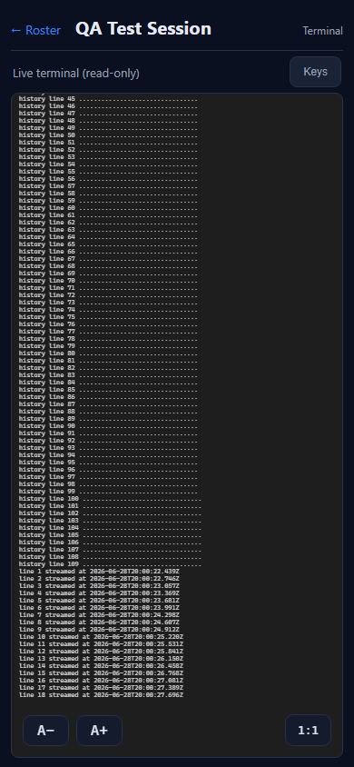
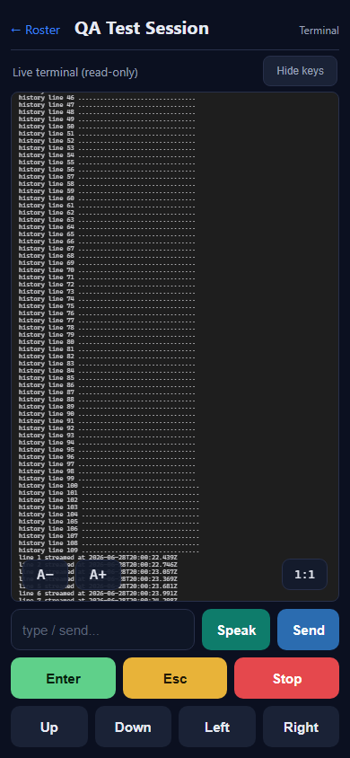
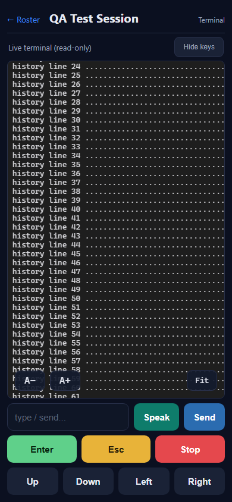
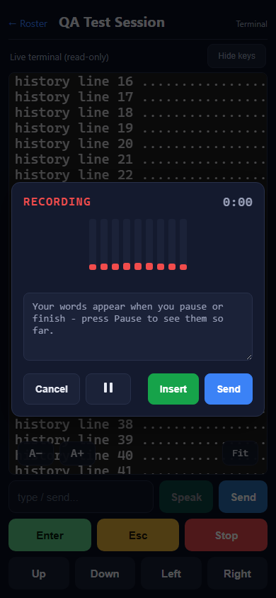
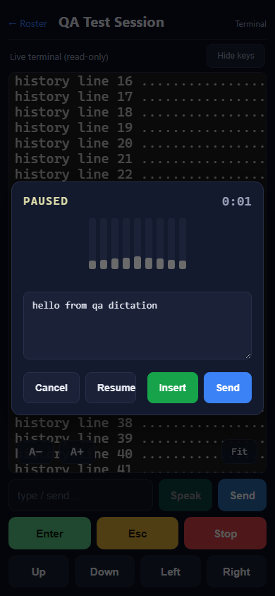
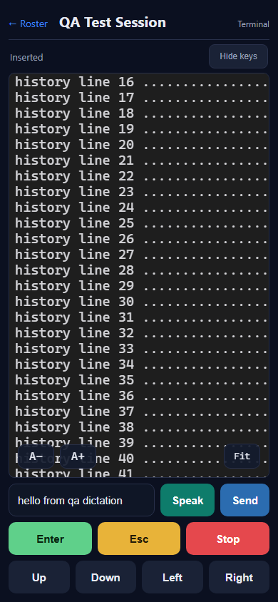
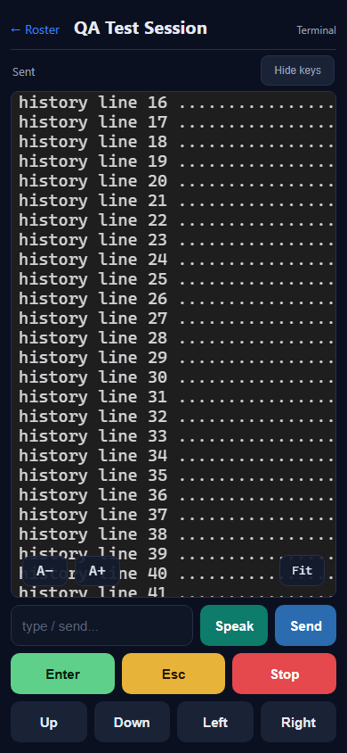
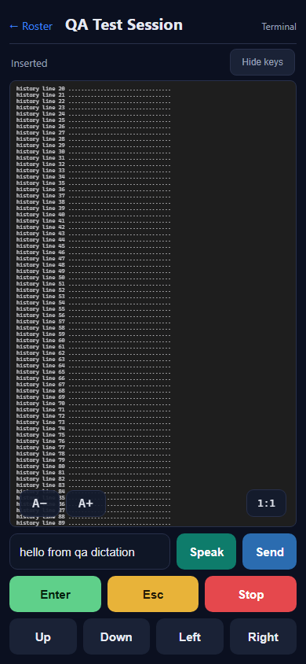

Screenshots












VERIFIED - all 12 acceptance criteria met (24 of 24 automated checks passed). PASS.
npm run build: tsc --noEmit +
vite build, clean).dist/ under /m/
(injecting the per-machine token exactly as the Gateway does), and implements the EXACT contract the code depends on:
the live WebSocket session-stream /sessions/{sid}/stream (cookie-authenticated), the
/prompt, /escape, /interrupt verbs, and the dictation utterance flow
(/wingman/utterance/upload -> /chunk/0 -> /complete). It records every request
(method, body, auth header, WS cookie) for assertion, and exposes a /qa/drop trigger to force a stream
drop for the reconnect test.--use-fake-ui-for-media-stream --use-fake-device-for-media-stream --use-file-for-fake-audio-capture=known.wav),
so dictation runs end to end without a real microphone. Each criterion was reproduced, asserted from the recorded
request log, and screenshotted.SessionWsProxyEndpoints.cs (proxies /sessions/{sid}/stream),
AuthMiddleware.cs (HasValidToken accepts the cc-gateway-token cookie),
and GatewayWingmanVoiceEndpoint.cs (the utterance register/chunk/complete flow returns the
dictionary-cleaned {transcript}).dotnet build cc-director.sln (Debug) succeeded with 0 errors / 0 warnings and
did NOT invoke npm (the mobile build target is gated to Release / BuildMobile=true). The PR changes zero
C# files.| # | Criterion | Expected | Actual (measured) | Result | Proof |
|---|---|---|---|---|---|
| 1 | Live WebSocket mirror, not 1s polling | A WebSocket carries terminal output; no /buffer?raw&since= poll loop. |
WS opened; 10+ binary PTY frames received; 0 /buffer requests. |
PASS | qa-02-streaming.png |
| 2 | Auto-reconnect after a drop | On a dropped connection the client reconnects (~1200ms) and resumes. | After /qa/drop: stub observed ws-close then a fresh ws-open (open count 1 -> 2); mirror resumed. |
PASS | qa-05-reconnected.png |
| 3 | xterm rendering, 5000 scrollback, sticky-bottom not yanked when scrolled up | Scrolled up >48px the view is NOT yanked by new output; at bottom it sticks. | Real overflow (292px). Scrolled to top: stayed at top while new output streamed (no yank). At bottom: stayed pinned (scrollTop==max) while new output streamed. scrollback:5000 set in code. |
PASS | qa-03-scrolled-up.png, qa-04-at-bottom.png |
| 4 | Controls hidden by default; Keys toggle | Controls hidden on load; "Keys" reveals them; terminal fills the screen. | On load: toggle label "Keys", .term-controls absent. After tap: controls present, label "Hide keys". |
PASS | qa-01-default-controls-hidden.png, qa-06-controls-shown.png |
| 5 | Fit/1:1 toggle + zoom | Fit/1:1 toggles column fit; A-/A+ change font within ~6-48px. | Fit button label flipped 1:1 -> Fit; two A+ taps grew the xterm screen height 495 -> 528px. |
PASS | qa-07-fit-toggle.png, qa-08-zoomed-in.png |
| 6 | Screen stays awake (Wake Lock) | Wake lock acquired on view open; released on leave. | Instrumented navigator.wakeLock: request("screen") called once on mount; release() called once on unmount. Real hardware grant cannot be tested in headless automation - confirmed the request/release code path is exercised. |
PASS (code path verified; real-device grant noted) | (instrumented; see notes) |
| 7 | Exact per-button payloads | Send: prompt AppendEnter=true + input cleared. Enter: \r AppendEnter=false. Esc: /escape. Stop: /interrupt. Arrows: ESC[A/[B/[D(left)/[C(right) AppendEnter=false. |
Recorded bodies: Send {text:"hello world",appendEnter:true}, input cleared; Enter {text:"\r",appendEnter:false}; one POST /escape; one POST /interrupt; arrows \x1b[A/\x1b[B/\x1b[D/\x1b[C all AppendEnter=false (Left=[D, Right=[C confirmed). |
PASS | qa-06-controls-shown.png + recorded log |
| 8 | Speak = dictation dialog with the four actions and the state machine | Dialog (no audio playback) with Cancel / Pause(Resume) / Insert / Send; RECORDING -> TRANSCRIBING -> PAUSED with an editable transcript. | Speak opened the dialog showing RECORDING + exactly 4 actions. Pause -> TRANSCRIBING -> PAUSED; transcript textarea became editable and showed the returned text. No TTS audio. | PASS | qa-09-dictate-recording.png, qa-10-dictate-paused-editable.png |
| 9 | Insert vs Send vs Cancel vs Pause behavior | Insert fills the input without sending; Send fills and submits; Pause checkpoints/appends. | Insert: input filled with transcript, prompt-call count unchanged (no submit). Send: new prompt {text:"hello from qa dictation",appendEnter:true} fired. Pause produced the appended editable transcript. |
PASS | qa-11-after-insert-no-send.png, qa-12-after-dictate-send.png |
| 10 | STT uses the utterance register->chunk->complete flow with Bearer; cleaned transcript; NO /wingman/tts | register -> chunk (X-Chunk-Sha256) -> complete returning the cleaned transcript; no TTS call from Speak. | Recorded: /wingman/utterance/upload -> /chunk/0 (SHA-256 header present) -> /complete returning the transcript; every call carried Bearer; 0 /wingman/tts calls. Source: the Gateway /complete runs the transcript through the dictionary-correction engine (the "cleaned transcript"). |
PASS | recorded log + GatewayWingmanVoiceEndpoint.cs |
| 11 | Bearer on every HTTP call and the WS; works with auth on and off | HTTP carries Bearer; the WS authenticates (cookie); both auth modes work. | Auth ON: WS handshake carried cc-gateway-token cookie (accepted); HTTP carried Bearer. Auth OFF: stream + prompt worked with no token at all (30 binary frames received). |
PASS | qa-13-authoff-streaming.png |
| 12 | Button set + grouping match the Android tab | Speak, Send, Enter, Esc, Stop, Up, Down, Left, Right in the Android grouping (row: input+Speak+Send; row: Enter+Esc+Stop; row: Up+Down+Left+Right). | All nine buttons present in the three Android-grouped rows; status row "Live terminal (read-only)". | PASS | qa-06-controls-shown.png |
The issue body named the Director route /sessions/{sid}/voice/utterance. The Developer instead used the
Gateway-native /wingman/utterance/upload -> /chunk/0 -> /complete flow. This is explicitly sanctioned by
the issue (the Director's /voice/utterance is not proxied through the Gateway; the Gateway-native equivalent
is reachable same-origin with the Bearer and needs no backend change). Verified in
GatewayWingmanVoiceEndpoint.cs: the route exists, accepts the register/chunk(SHA-256)/complete shape the
client sends, and returns the dictionary-cleaned {transcript}. The SUBSTANCE of AC10 (a resumable
register->chunk->complete utterance batch flow, Bearer-authenticated, cleaned transcript, and NO TTS on Speak) holds.









